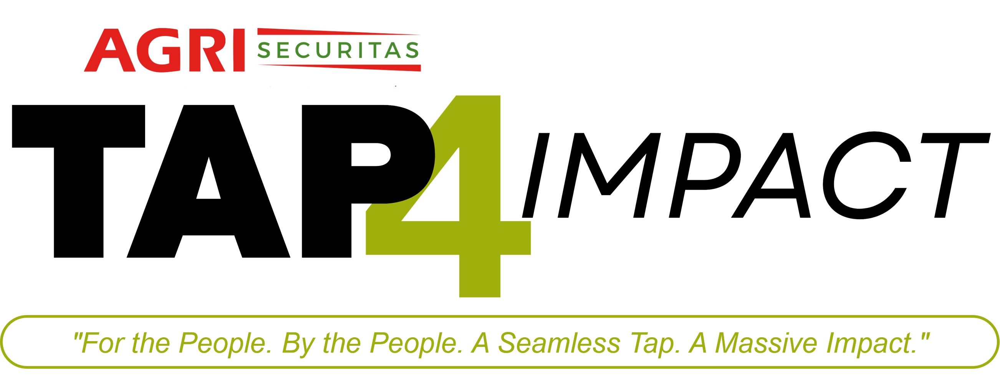

TAP4IMPACT, a simple and powerful way for South Africans to give back.
By tapping on a digital donation screen, individuals can seamlessly contribute to the protection of farming communities.
This initiative boosts the financial resilience of the Trust Fund, ensuring lasting, community-based impact in rural areas.